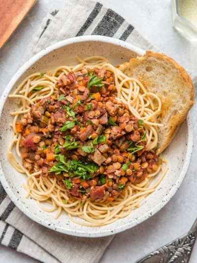

Use this page to see our favourite recipes!
The following breakfasts are all vegan-friendly:
The following Main Meals are all vegan-friendly:
A great combination of has brown, sweet potato pumpkinand creamy cashew sauce,all piled high with herbs.

This meal is perect or when you feel like Mexican,ut would prefer a lighter alternative to heavier dishes such as tacos and nachos.

A hearty bolognese with lentils, and loads of veggies, so it's packed full of plant protein and goodness.
A traditional Italian dish that serves as a great vegan alternative with butternut pumpkin and pesto trapanese.

A wonderful dish with rustic bread and tomato salad, gently oven-baked ingredients with softened flavours.

The creamy Indian dish perfect for a vegan dinner.

The following desserts are all vegan-friendly:
A delicious sponge cake dunked in chocolate and rolled in coconut.